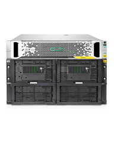

HPE StoreOnce 5000 series Tech Specs:
StoreOnce 5100:
- 2U Scalable rack
- Max capacity raw 288 TB
- Max capacity usable 216 TB
- Max Capacity w/Dedupe - 3.36 PB
- Write performance - 13.8 TB/hr
- Catalyst performance - 26.7 TB/hr
- Read Performance - 14.2 TB/hr
- Host interface - (2) 10 Gb iSCSI and (4) 8 Gb Fibre Channel
- Target - Virtual Tape Library and NAS
- Max fan-in/backup targets - 24
StoreOnce 5500:
- 7 to 22U rack-mount form factor
- Max capacity raw 1.12 PB
- Max capacity useable 864 TB
- Max Capacity w/Dedupe - 17 PB
- Write performance - 20.4 TB/hr
- Catalyst performance - 37.7 TB/hr
- Read Performance - 14.8 TB/hr
- Host interface - (2) 10 Gb iSCSI and (4) 8 Gb Fibre Channel
- Target - Virtual Tape Library and NAS
- Max fan-in/backup targets - 50